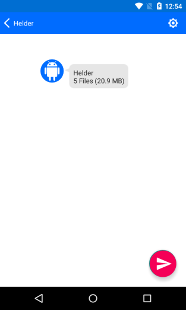
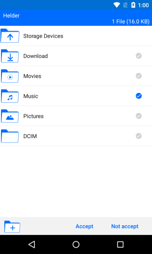
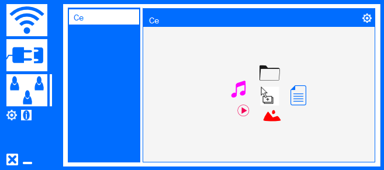
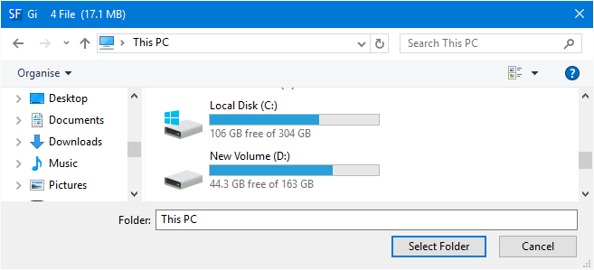

SFT
DESCRIZIONE
Silfer Trasferimento di file (SFT) è l'applicazione migliore per trasferire i vostre file ad alta velocità tra i dispositivi che utilizzano WiFi. Con SFT sarete collegati con tutte le persone intorno a voi e inviare e ricevere file, tutto allo stesso tempo e senza aspettare.
SFT è un'applicazione molto semplice da usare, che richiedono ogni utente solo 15 secondi per imparare a utilizzare l'applicazione.
Silfer Trasferimento di file cerca sempre di sfruttare la capacità massima dei dispositivi permettendo così agli utenti di effettuare trasferimenti ad alta velocità raggiungendo spesso decine di MB/s seconda delle funzionalità dei dispositivi.
SFT fa tutto per te, l'unica cosa che il SFT non fare è scegliere quali dispositivi per la connessione e selezionare i file da inviare in quanto la SFT non può leggere i tuoi pensieri, ma fornisce funzioni semplici e robuste per completare questi compiti in pochi secondi.
COME USARE
2º telefono invia file 1º Telefono
1º Telefono
2º Telefono

1º Telefono

2º Telefono

2º Telefono
1º Telefono
1º Telefono
1º Telefono

1º computer invia i file al 2º Computer
1º Computer

2º Computer

2º Computer
1º Computer
2º Computer
1º Computer

2º Computer

File chooser of SFT in Android
SilFer Trasferimento di file in Microsoft Windows
DOWNLOAD
CARATTERISTICHE
- Unica applicazione che supporta più (invio e / o ricezione) i trasferimenti tra più dispositivi. Con SFT un dispositivo può essere l'invio di file a più dispositivi contemporaneamente, e anche quello stesso istante il dispositivo potrebbe essere la ricezione di file da più dispositivi.
- Un dispositivo può inviare e ricevere file con lo stesso dispositivo e allo stesso tempo. Se un dispositivo è l'invio di 10 GB a un altro dispositivo, l'altro dispositivo vuole anche inviare 100 MB, non è bisogno di aspettare, basta fare un altro nuovo collegamento e pronto.
- SFT è l'unico che consente all'utente di messaggi di testo cambio (Chat). Questa caratteristica è molto importante quando si utilizza il SFT nelle grandi imprese, edifici o università dal momento che con la SFT si può essere facilmente collegato con tutte le persone intorno a voi. Così, quando è necessario un file è alcuna necessità di gridare o andare alla persona desiderata per richiedere il file. Invia un messaggio "Ho bisogno di un file XYZ".
- SFT ha il miglior strumento per scegliere i file. Con il selettore di file è possibile visualizzare le foto, riprodurre audio e video, e anche la ricerca di qualsiasi file. Così si può dire al File Trasferimento di file che si desidera visualizzare tutti i brani il cui titolo contiene la parola "passione".
- SFT dà all'utente la libertà di scegliere sempre la posizione in cui saranno ricevuti i file. Questa caratteristica è molto importante in quanto tutto l'utente vuole sempre avere ogni tipo di file in una posizione specifica evitando così pasticcio.
- SFT permette all'utente di selezionare i file una volta e inviare a più dispositivi contemporaneamente. Molto importante quando è necessario inviare gli stessi file su più dispositivi. Invece di selezionare lo stesso file 100 volte per inviare 100 dispositivi, seleziona 1 volta e invia a 100 dispositivi.
- Silfer Trasferimento di file supporta la continuità di trasferimento in qualsiasi momento. Molto importante in caso di errori, quando esiste già un file in un dispositivo ricevitore o quando un utente ha 300 GB di inviare, in modo da inviare 150 GB in un momento e trasmette il resto in un altro tempo, giorno, mese, anno ancora.
- SFT fornisce informazioni utili circa il trasferimento prima che l'utente accetta il trasferimento. E 'sempre importante sapere come molti file, la dimensione totale, e chi sta tentando di inviare il file prima di accettare il trasferimento.
- Consente all'utente di inviare i file su qualsiasi rete (WiFi, Ethernet, ...). Solo su reti mobili che SFP non consente per motivi di sicurezza, ma questa funzione può essere attivata nelle versioni future.
- SFT consente all'utente di accettare le connessioni automaticamente o manualmente. Questo perché Silfer File Transfer è come un'applicazione di chat, dove gli utenti stabiliscono delle sessioni e inviare facilmente messaggi (file) in qualsiasi momento.
- Silfer Trasferimento di file supporta l'invio di qualsiasi tipo e di qualsiasi dimensione del file.
SVILUPPATORE
Name: António Celso Silva Fernandes
E-mail: antonio@cvsilfer.com
Nazionalità: Capo Verde